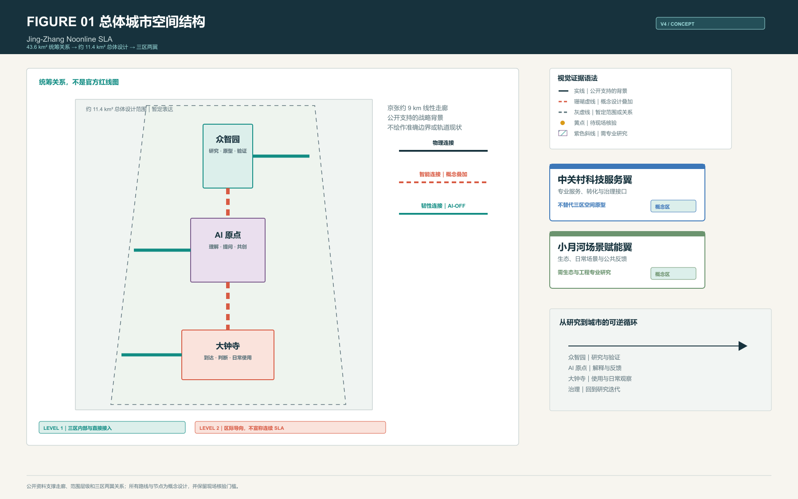
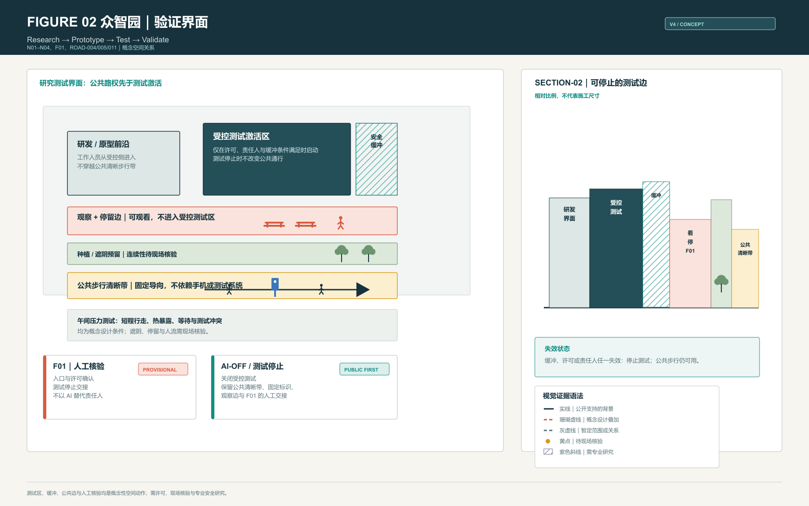
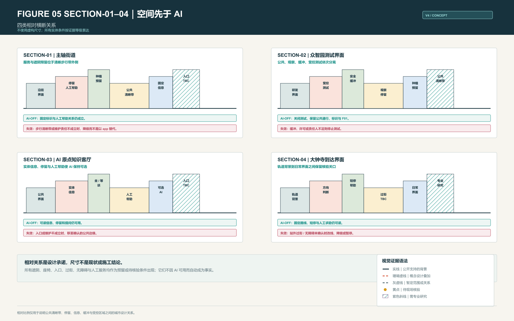
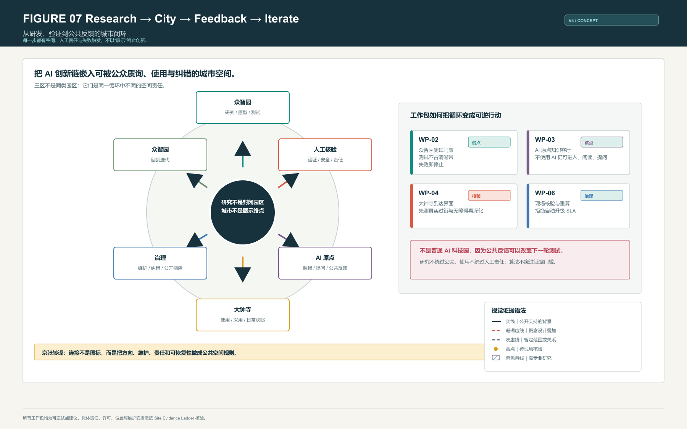

众智园
研究、原型与验证界面。普通公众、观察者、研发人员和受控测试拥有彼此清晰的空间边界。
- 公共清晰带先于测试激活
- 观察边与缓冲分离
- F01 负责许可核验与停测交接
百年京张 AI 创新带｜V4 设计评审包
让 AI 增强城市，而不是让城市依赖 AI。午间压力测试把路线、停留、人工责任和失效降级变成可读的城市空间。
01｜Overall Urban Structure
43.6 km² 是统筹研究关系，约 11.4 km² 是总体设计范围。京张约 9 km 的遗址公园走廊、三区两翼和重点区角色是公开战略背景；提交的边界、路线、节点和服务带是概念设计，不是 official boundary 或现状 GIS。

02｜Three Spatial Prototypes
研究、原型与验证界面。普通公众、观察者、研发人员和受控测试拥有彼此清晰的空间边界。
可进入、可阅读、可停留、可提问的公共知识客厅。AI 是可选择的，而不是进入条件。
轨道到达与日常使用之间的概念转换界面。它不假定站外过街、入口或无障碍已经成立。




03｜Sections
四类断面只表达相对关系。它们不虚构尺寸、现状设施或施工条件；遮阴、座椅、入口、过街、无障碍和人工服务都以预留、待核验或专业研究语法呈现。

04｜Noonline / AI-OFF

05｜Research to City

| WP | WHAT / WHERE | FIRST STEP + EVIDENCE | FAIL | NEXT |
|---|---|---|---|---|
| WP-01 | Level 1 固定导向、清晰带和支持点预留 | 核验合法步行、转折和维护责任 | 清晰带被占或无维护责任 | 深化为长期街道与服务工作 |
| WP-02 | 众智园测试验证门廊 | 核验许可、缓冲与公共绕行 | 测试占用步行或失去缓冲 | 深化安全和运营界面 |
| WP-03 | AI 原点知识客厅 | 核验公共入口、内容、停留与人工提问 | 入口关闭或内容不可维护 | 深化公共空间与社区运营 |
| WP-04 | 大钟寺到达转换 | 实测站外过街、绕行、入口与责任 | 风险、不可接受绕行或无责任人 | 深化站城界面与无障碍 |
| WP-05 | 固定导向与人工兜底 | 核验标识、时段、维护和 failure exercise | 标识、设施或人工角色失效 | 形成可审计维护机制 |
| WP-06 | 现场核验、重算与迭代 | 授权人员更新 ledger | 关键证据缺失、过期或被拒绝 | 证据完整后才允许扩展 |
06｜agent.2 Element Mechanisms
以下均为概念接口，不是已获得的土地、资金、算力、合作或许可。详细双语审计记录见 AGENT2-MECH-01。
| 要素 | 空间接口 | 机制 / ROLE | 阶段门 | 失败响应 |
|---|---|---|---|---|
| ELEM-01 土地 | PROV-KEY-001—003 | 接口预留；ROLE-05/03 | PHASE-000 权属、公共性、控制条件 | 缺证据即 HOLD |
| ELEM-02 空间 | Level 1、N01—N12、F01—F05 | 清晰带与人工兜底；ROLE-01/03/04 | AI-OFF 可读、合法、可维护 | STOP/改线或 DOWNGRADE |
| ELEM-03 产业 | 三区、SC/IV、RS-01—05 | 研究—测试—反馈—转化；ROLE-01/04/06 | 获准窗口、绕行、安全/隐私 | STOP 测试或 HOLD 转化 |
| ELEM-04 资金 | PHASE-000—003、WP-01—06 | 阶段采购与运维触发；ROLE-01/04/05 | 合法资金/采购和生命周期记录 | 无承诺即 HOLD |
| ELEM-05 人才 | N01/N05/N06/N08、EVENT/DEV | 公开交流与核验训练；ROLE-02/04/06 | 具名主持、可达、权利记录 | 缺主体即 HOLD，侵权即 STOP |
| ELEM-06 算力 | N01/N05/N07/N09 可选 AI | 边缘/云接口与降级；ROLE-06/04 | 安全、监控、责任、AI-OFF 演练 | 失败即关闭 AI |
| ELEM-07 数据 | 45 FV、18 SLA-A、N01—N12 | 来源与有效期账本；ROLE-02/06 | 仅授权人类可写 Verified | 缺失/过期即 unknown/DOWNGRADE |
| ELEM-08 场景 | SC-01—10、IV-01—03 | 许可、绕行、人工兜底；ROLE-01/02/05/06 | 具名停止权与证据协议 | STOP / HOLD / DOWNGRADE |
07｜Evidence Discipline

Engine 对现有概念路线、故障情景和证据链进行确定性离线检查。它不会把 unknown、provisional 或 not field verified 自动判为满足。
本清单由机器可读 ledger 自动生成。全部任务当前为 unknown，不代表任何遮阴、饮水、座椅、入口、过街、绕行或人工服务已经被现场核验。
Target SLA = A；Verified SLA = B。SLA-A 的 18 项 mandatory evidence 尚未完成，因此 blocked。AI 不得写入 observed、verified 或 rejected。
| 任务 | 对象 | 所需证据 | 核验方法 | 通过 / 失败 | 状态 | SLA 影响 |
|---|---|---|---|---|---|---|
| FV-SLA-A-SHADE-CONTINUITY-SLA-A 遮阴连续性 | SLA-A · route:SLA-A | Geolocated route-segment observation at the specified midday sampling window, including shade/solar-exposure record and attachment. | Walk the declared reference axis segment; record continuous shaded and exposed intervals with timestamped, geolocated evidence. | Observed shaded coverage meets the pre-approved route threshold for the specified sampling window. / A gap beyond the approved exposure threshold is observed, or the route cannot be observed safely. | unknown | Blocks SLA-A promotion when not verified; rejection triggers route-service review. |
| FV-SLA-A-CONTINUOUS-EXPOSURE-SLA-A 连续暴晒距离 | SLA-A · route:SLA-A | Timestamped, geolocated walking survey showing the longest continuously exposed interval. | Traverse the reference segment during the approved time window and measure each uninterrupted exposure interval. | The longest exposed interval is within the pre-approved maximum. / The longest exposed interval exceeds the pre-approved maximum or no reliable measurement is available. | unknown | Blocks SLA-A promotion when not verified; rejection triggers route-service review. |
| FV-SLA-A-SUMMER-DETOUR-SLA-A 夏季实际绕行 | SLA-A · route:SLA-A | Geolocated accessible route trace comparing the declared reference route and the actual shade/access detour. | Walk the practical accessible alternative in the approved summer sampling window; record distance and access constraints. | The measured detour is within the pre-approved threshold and preserves accessibility. / The detour exceeds the threshold, becomes inaccessible, or cannot be completed. | unknown | Blocks SLA-A promotion when not verified; rejection requires a remain-B or downgrade review. |
| FV-SLA-A-STATIC-WAYFINDING-SLA-A 离线固定导向 | SLA-A · route:SLA-A | Photographic or documented proof of fixed, legible, low-technology wayfinding covering the declared reference route. | Walk the route with AI and mobile services unavailable; document each required direction/decision point. | All required decision points have legible, durable offline guidance under the approved accessibility criteria. / A required decision point lacks legible offline guidance or requires AI/mobile access to proceed. | unknown | Blocks SLA-A promotion when not verified and affects AI-OFF support. |
| FV-SLA-A-NODE-LOCATION-N01 节点真实位置 | SLA-A · node:N01 | Geolocated field record confirming the proposed node can be associated with a real, publicly accessible place or documenting why it cannot. | Visit the declared node context; record location, public accessibility and an attachment. | The node can be located and its context supports the declared design role without claiming an existing service facility. / The location is inaccessible, materially inconsistent with the declared role, or cannot be located. | unknown | Blocks SLA-A promotion when the node is mandatory; rejection triggers siting revision or downgrade review. |
| FV-SLA-A-NODE-LOCATION-N02 节点真实位置 | SLA-A · node:N02 | Geolocated field record confirming the proposed node can be associated with a real, publicly accessible place or documenting why it cannot. | Visit the declared node context; record location, public accessibility and an attachment. | The node can be located and its context supports the declared design role without claiming an existing service facility. / The location is inaccessible, materially inconsistent with the declared role, or cannot be located. | unknown | Blocks SLA-A promotion when the node is mandatory; rejection triggers siting revision or downgrade review. |
| FV-SLA-A-NODE-LOCATION-N03 节点真实位置 | SLA-A · node:N03 | Geolocated field record confirming the proposed node can be associated with a real, publicly accessible place or documenting why it cannot. | Visit the declared node context; record location, public accessibility and an attachment. | The node can be located and its context supports the declared design role without claiming an existing service facility. / The location is inaccessible, materially inconsistent with the declared role, or cannot be located. | unknown | Blocks SLA-A promotion when the node is mandatory; rejection triggers siting revision or downgrade review. |
| FV-SLA-A-NODE-LOCATION-N04 节点真实位置 | SLA-A · node:N04 | Geolocated field record confirming the proposed node can be associated with a real, publicly accessible place or documenting why it cannot. | Visit the declared node context; record location, public accessibility and an attachment. | The node can be located and its context supports the declared design role without claiming an existing service facility. / The location is inaccessible, materially inconsistent with the declared role, or cannot be located. | unknown | Blocks SLA-A promotion when the node is mandatory; rejection triggers siting revision or downgrade review. |
| FV-SLA-A-NODE-LOCATION-N05 节点真实位置 | SLA-A · node:N05 | Geolocated field record confirming the proposed node can be associated with a real, publicly accessible place or documenting why it cannot. | Visit the declared node context; record location, public accessibility and an attachment. | The node can be located and its context supports the declared design role without claiming an existing service facility. / The location is inaccessible, materially inconsistent with the declared role, or cannot be located. | unknown | Blocks SLA-A promotion when the node is mandatory; rejection triggers siting revision or downgrade review. |
| FV-SLA-A-NODE-LOCATION-N06 节点真实位置 | SLA-A · node:N06 | Geolocated field record confirming the proposed node can be associated with a real, publicly accessible place or documenting why it cannot. | Visit the declared node context; record location, public accessibility and an attachment. | The node can be located and its context supports the declared design role without claiming an existing service facility. / The location is inaccessible, materially inconsistent with the declared role, or cannot be located. | unknown | Blocks SLA-A promotion when the node is mandatory; rejection triggers siting revision or downgrade review. |
| FV-SLA-A-REST-NODES-N02 座椅与休息节点 | SLA-A · node:N02 | Field record of publicly usable resting provision, condition, access and operating constraint at the declared node. | Observe the node, document seating/rest provision, accessibility, condition and availability. | A usable, accessible rest opportunity is present and available under the approved service condition. / No usable rest opportunity is present, access is blocked, or condition is unsafe/unavailable. | unknown | Mandatory failures can keep the route at B or trigger downgrade review. |
| FV-SLA-A-REST-NODES-N05 座椅与休息节点 | SLA-A · node:N05 | Field record of publicly usable resting provision, condition, access and operating constraint at the declared node. | Observe the node, document seating/rest provision, accessibility, condition and availability. | A usable, accessible rest opportunity is present and available under the approved service condition. / No usable rest opportunity is present, access is blocked, or condition is unsafe/unavailable. | unknown | Mandatory failures can keep the route at B or trigger downgrade review. |
| FV-SLA-A-WATER-NODES-N02 饮水补给节点 | SLA-A · node:N02 | Field record of the actual public water option, availability status, access condition and source attachment. | Visit and document the water option and its availability without inferring water quality beyond approved evidence. | A public, usable water option is accessible and available under the approved service condition. / No usable option is present, access is blocked, or the option is unavailable. | unknown | Mandatory failures can keep the route at B or trigger downgrade review. |
| FV-SLA-A-WATER-NODES-N05 饮水补给节点 | SLA-A · node:N05 | Field record of the actual public water option, availability status, access condition and source attachment. | Visit and document the water option and its availability without inferring water quality beyond approved evidence. | A public, usable water option is accessible and available under the approved service condition. / No usable option is present, access is blocked, or the option is unavailable. | unknown | Mandatory failures can keep the route at B or trigger downgrade review. |
| FV-SLA-A-PUBLIC-ENTRIES-N03 公共入口开放条件 | SLA-A · node:N03 | Timestamped access observation, including entrance identity, public-access condition and any opening constraint. | Observe the declared entry in the relevant midday period and document access and barrier-free condition. | The entry is publicly accessible during the approved service window and meets the documented access condition. / The entry is closed, restricted, inaccessible, or cannot support the declared route connection. | unknown | Mandatory failures can keep the route at B or trigger downgrade review. |
| FV-SLA-A-CROSSING-NODES-N04 关键过街条件 | SLA-A · node:N04 | Field observation of the legal crossing, waiting condition, accessibility and route continuity at the declared node. | Observe and traverse the legal crossing during the approved period; document waiting and continuity conditions. | A legal, accessible crossing maintains the declared route continuity under the approved condition. / The crossing is unsafe, inaccessible, unavailable, or breaks route continuity. | unknown | Mandatory failures can keep the route at B or trigger downgrade review. |
| FV-SLA-A-HUMAN-FALLBACK-NODES-N02 人工兜底服务 | SLA-A · node:N02 | Documented responsible human role, service point, usable time window and low-technology fallback procedure. | Confirm the service role and availability through an authorized, recorded field/operational check. | A responsible human service role and usable fallback procedure are confirmed for the approved window. / No responsible role, time window, or usable fallback procedure is confirmed. | unknown | Mandatory failures can keep the route at B or trigger downgrade review; AI cannot substitute for this condition. |
| FV-SLA-A-HUMAN-FALLBACK-NODES-N05 人工兜底服务 | SLA-A · node:N05 | Documented responsible human role, service point, usable time window and low-technology fallback procedure. | Confirm the service role and availability through an authorized, recorded field/operational check. | A responsible human service role and usable fallback procedure are confirmed for the approved window. / No responsible role, time window, or usable fallback procedure is confirmed. | unknown | Mandatory failures can keep the route at B or trigger downgrade review; AI cannot substitute for this condition. |
| FV-SLA-B-SHADE-CONTINUITY-SLA-B 遮阴连续性 | SLA-B · route:SLA-B | Geolocated route-segment observation at the specified midday sampling window, including shade/solar-exposure record and attachment. | Walk the declared reference axis segment; record continuous shaded and exposed intervals with timestamped, geolocated evidence. | Observed shaded coverage meets the pre-approved route threshold for the specified sampling window. / A gap beyond the approved exposure threshold is observed, or the route cannot be observed safely. | unknown | Blocks SLA-A promotion when not verified; rejection triggers route-service review. |
| FV-SLA-B-CONTINUOUS-EXPOSURE-SLA-B 连续暴晒距离 | SLA-B · route:SLA-B | Timestamped, geolocated walking survey showing the longest continuously exposed interval. | Traverse the reference segment during the approved time window and measure each uninterrupted exposure interval. | The longest exposed interval is within the pre-approved maximum. / The longest exposed interval exceeds the pre-approved maximum or no reliable measurement is available. | unknown | Blocks SLA-A promotion when not verified; rejection triggers route-service review. |
| FV-SLA-B-SUMMER-DETOUR-SLA-B 夏季实际绕行 | SLA-B · route:SLA-B | Geolocated accessible route trace comparing the declared reference route and the actual shade/access detour. | Walk the practical accessible alternative in the approved summer sampling window; record distance and access constraints. | The measured detour is within the pre-approved threshold and preserves accessibility. / The detour exceeds the threshold, becomes inaccessible, or cannot be completed. | unknown | Blocks SLA-A promotion when not verified; rejection requires a remain-B or downgrade review. |
| FV-SLA-B-STATIC-WAYFINDING-SLA-B 离线固定导向 | SLA-B · route:SLA-B | Photographic or documented proof of fixed, legible, low-technology wayfinding covering the declared reference route. | Walk the route with AI and mobile services unavailable; document each required direction/decision point. | All required decision points have legible, durable offline guidance under the approved accessibility criteria. / A required decision point lacks legible offline guidance or requires AI/mobile access to proceed. | unknown | Blocks SLA-A promotion when not verified and affects AI-OFF support. |
| FV-SLA-B-NODE-LOCATION-N07 节点真实位置 | SLA-B · node:N07 | Geolocated field record confirming the proposed node can be associated with a real, publicly accessible place or documenting why it cannot. | Visit the declared node context; record location, public accessibility and an attachment. | The node can be located and its context supports the declared design role without claiming an existing service facility. / The location is inaccessible, materially inconsistent with the declared role, or cannot be located. | unknown | Blocks SLA-A promotion when the node is mandatory; rejection triggers siting revision or downgrade review. |
| FV-SLA-B-NODE-LOCATION-N08 节点真实位置 | SLA-B · node:N08 | Geolocated field record confirming the proposed node can be associated with a real, publicly accessible place or documenting why it cannot. | Visit the declared node context; record location, public accessibility and an attachment. | The node can be located and its context supports the declared design role without claiming an existing service facility. / The location is inaccessible, materially inconsistent with the declared role, or cannot be located. | unknown | Blocks SLA-A promotion when the node is mandatory; rejection triggers siting revision or downgrade review. |
| FV-SLA-B-NODE-LOCATION-N09 节点真实位置 | SLA-B · node:N09 | Geolocated field record confirming the proposed node can be associated with a real, publicly accessible place or documenting why it cannot. | Visit the declared node context; record location, public accessibility and an attachment. | The node can be located and its context supports the declared design role without claiming an existing service facility. / The location is inaccessible, materially inconsistent with the declared role, or cannot be located. | unknown | Blocks SLA-A promotion when the node is mandatory; rejection triggers siting revision or downgrade review. |
| FV-SLA-B-NODE-LOCATION-N10 节点真实位置 | SLA-B · node:N10 | Geolocated field record confirming the proposed node can be associated with a real, publicly accessible place or documenting why it cannot. | Visit the declared node context; record location, public accessibility and an attachment. | The node can be located and its context supports the declared design role without claiming an existing service facility. / The location is inaccessible, materially inconsistent with the declared role, or cannot be located. | unknown | Blocks SLA-A promotion when the node is mandatory; rejection triggers siting revision or downgrade review. |
| FV-SLA-B-REST-NODES-N07 座椅与休息节点 | SLA-B · node:N07 | Field record of publicly usable resting provision, condition, access and operating constraint at the declared node. | Observe the node, document seating/rest provision, accessibility, condition and availability. | A usable, accessible rest opportunity is present and available under the approved service condition. / No usable rest opportunity is present, access is blocked, or condition is unsafe/unavailable. | unknown | Mandatory failures can keep the route at B or trigger downgrade review. |
| FV-SLA-B-REST-NODES-N09 座椅与休息节点 | SLA-B · node:N09 | Field record of publicly usable resting provision, condition, access and operating constraint at the declared node. | Observe the node, document seating/rest provision, accessibility, condition and availability. | A usable, accessible rest opportunity is present and available under the approved service condition. / No usable rest opportunity is present, access is blocked, or condition is unsafe/unavailable. | unknown | Mandatory failures can keep the route at B or trigger downgrade review. |
| FV-SLA-B-WATER-NODES-N09 饮水补给节点 | SLA-B · node:N09 | Field record of the actual public water option, availability status, access condition and source attachment. | Visit and document the water option and its availability without inferring water quality beyond approved evidence. | A public, usable water option is accessible and available under the approved service condition. / No usable option is present, access is blocked, or the option is unavailable. | unknown | Mandatory failures can keep the route at B or trigger downgrade review. |
| FV-SLA-B-PUBLIC-ENTRIES-N08 公共入口开放条件 | SLA-B · node:N08 | Timestamped access observation, including entrance identity, public-access condition and any opening constraint. | Observe the declared entry in the relevant midday period and document access and barrier-free condition. | The entry is publicly accessible during the approved service window and meets the documented access condition. / The entry is closed, restricted, inaccessible, or cannot support the declared route connection. | unknown | Mandatory failures can keep the route at B or trigger downgrade review. |
| FV-SLA-B-CROSSING-NODES-N07 关键过街条件 | SLA-B · node:N07 | Field observation of the legal crossing, waiting condition, accessibility and route continuity at the declared node. | Observe and traverse the legal crossing during the approved period; document waiting and continuity conditions. | A legal, accessible crossing maintains the declared route continuity under the approved condition. / The crossing is unsafe, inaccessible, unavailable, or breaks route continuity. | unknown | Mandatory failures can keep the route at B or trigger downgrade review. |
| FV-SLA-B-CROSSING-NODES-N10 关键过街条件 | SLA-B · node:N10 | Field observation of the legal crossing, waiting condition, accessibility and route continuity at the declared node. | Observe and traverse the legal crossing during the approved period; document waiting and continuity conditions. | A legal, accessible crossing maintains the declared route continuity under the approved condition. / The crossing is unsafe, inaccessible, unavailable, or breaks route continuity. | unknown | Mandatory failures can keep the route at B or trigger downgrade review. |
| FV-SLA-B-HUMAN-FALLBACK-NODES-N07 人工兜底服务 | SLA-B · node:N07 | Documented responsible human role, service point, usable time window and low-technology fallback procedure. | Confirm the service role and availability through an authorized, recorded field/operational check. | A responsible human service role and usable fallback procedure are confirmed for the approved window. / No responsible role, time window, or usable fallback procedure is confirmed. | unknown | Mandatory failures can keep the route at B or trigger downgrade review; AI cannot substitute for this condition. |
| FV-SLA-B-HUMAN-FALLBACK-NODES-N09 人工兜底服务 | SLA-B · node:N09 | Documented responsible human role, service point, usable time window and low-technology fallback procedure. | Confirm the service role and availability through an authorized, recorded field/operational check. | A responsible human service role and usable fallback procedure are confirmed for the approved window. / No responsible role, time window, or usable fallback procedure is confirmed. | unknown | Mandatory failures can keep the route at B or trigger downgrade review; AI cannot substitute for this condition. |
| FV-SLA-C-SHADE-CONTINUITY-SLA-C 遮阴连续性 | SLA-C · route:SLA-C | Geolocated route-segment observation at the specified midday sampling window, including shade/solar-exposure record and attachment. | Walk the declared reference axis segment; record continuous shaded and exposed intervals with timestamped, geolocated evidence. | Observed shaded coverage meets the pre-approved route threshold for the specified sampling window. / A gap beyond the approved exposure threshold is observed, or the route cannot be observed safely. | unknown | Blocks SLA-A promotion when not verified; rejection triggers route-service review. |
| FV-SLA-C-CONTINUOUS-EXPOSURE-SLA-C 连续暴晒距离 | SLA-C · route:SLA-C | Timestamped, geolocated walking survey showing the longest continuously exposed interval. | Traverse the reference segment during the approved time window and measure each uninterrupted exposure interval. | The longest exposed interval is within the pre-approved maximum. / The longest exposed interval exceeds the pre-approved maximum or no reliable measurement is available. | unknown | Blocks SLA-A promotion when not verified; rejection triggers route-service review. |
| FV-SLA-C-SUMMER-DETOUR-SLA-C 夏季实际绕行 | SLA-C · route:SLA-C | Geolocated accessible route trace comparing the declared reference route and the actual shade/access detour. | Walk the practical accessible alternative in the approved summer sampling window; record distance and access constraints. | The measured detour is within the pre-approved threshold and preserves accessibility. / The detour exceeds the threshold, becomes inaccessible, or cannot be completed. | unknown | Blocks SLA-A promotion when not verified; rejection requires a remain-B or downgrade review. |
| FV-SLA-C-STATIC-WAYFINDING-SLA-C 离线固定导向 | SLA-C · route:SLA-C | Photographic or documented proof of fixed, legible, low-technology wayfinding covering the declared reference route. | Walk the route with AI and mobile services unavailable; document each required direction/decision point. | All required decision points have legible, durable offline guidance under the approved accessibility criteria. / A required decision point lacks legible offline guidance or requires AI/mobile access to proceed. | unknown | Blocks SLA-A promotion when not verified and affects AI-OFF support. |
| FV-SLA-C-NODE-LOCATION-N11 节点真实位置 | SLA-C · node:N11 | Geolocated field record confirming the proposed node can be associated with a real, publicly accessible place or documenting why it cannot. | Visit the declared node context; record location, public accessibility and an attachment. | The node can be located and its context supports the declared design role without claiming an existing service facility. / The location is inaccessible, materially inconsistent with the declared role, or cannot be located. | unknown | Blocks SLA-A promotion when the node is mandatory; rejection triggers siting revision or downgrade review. |
| FV-SLA-C-NODE-LOCATION-N12 节点真实位置 | SLA-C · node:N12 | Geolocated field record confirming the proposed node can be associated with a real, publicly accessible place or documenting why it cannot. | Visit the declared node context; record location, public accessibility and an attachment. | The node can be located and its context supports the declared design role without claiming an existing service facility. / The location is inaccessible, materially inconsistent with the declared role, or cannot be located. | unknown | Blocks SLA-A promotion when the node is mandatory; rejection triggers siting revision or downgrade review. |
| FV-SLA-C-REST-NODES-N11 座椅与休息节点 | SLA-C · node:N11 | Field record of publicly usable resting provision, condition, access and operating constraint at the declared node. | Observe the node, document seating/rest provision, accessibility, condition and availability. | A usable, accessible rest opportunity is present and available under the approved service condition. / No usable rest opportunity is present, access is blocked, or condition is unsafe/unavailable. | unknown | Mandatory failures can keep the route at B or trigger downgrade review. |
| FV-SLA-C-WATER-NODES-N11 饮水补给节点 | SLA-C · node:N11 | Field record of the actual public water option, availability status, access condition and source attachment. | Visit and document the water option and its availability without inferring water quality beyond approved evidence. | A public, usable water option is accessible and available under the approved service condition. / No usable option is present, access is blocked, or the option is unavailable. | unknown | Mandatory failures can keep the route at B or trigger downgrade review. |
| FV-SLA-C-PUBLIC-ENTRIES-N12 公共入口开放条件 | SLA-C · node:N12 | Timestamped access observation, including entrance identity, public-access condition and any opening constraint. | Observe the declared entry in the relevant midday period and document access and barrier-free condition. | The entry is publicly accessible during the approved service window and meets the documented access condition. / The entry is closed, restricted, inaccessible, or cannot support the declared route connection. | unknown | Mandatory failures can keep the route at B or trigger downgrade review. |
| FV-SLA-C-CROSSING-NODES-N11 关键过街条件 | SLA-C · node:N11 | Field observation of the legal crossing, waiting condition, accessibility and route continuity at the declared node. | Observe and traverse the legal crossing during the approved period; document waiting and continuity conditions. | A legal, accessible crossing maintains the declared route continuity under the approved condition. / The crossing is unsafe, inaccessible, unavailable, or breaks route continuity. | unknown | Mandatory failures can keep the route at B or trigger downgrade review. |
| FV-SLA-C-HUMAN-FALLBACK-NODES-N11 人工兜底服务 | SLA-C · node:N11 | Documented responsible human role, service point, usable time window and low-technology fallback procedure. | Confirm the service role and availability through an authorized, recorded field/operational check. | A responsible human service role and usable fallback procedure are confirmed for the approved window. / No responsible role, time window, or usable fallback procedure is confirmed. | unknown | Mandatory failures can keep the route at B or trigger downgrade review; AI cannot substitute for this condition. |
总览地图、三层范围、重点区域、用地分区、交通慢行、蓝绿公共空间、建筑、更新项目、AI 场景、核心指标、任务覆盖、自检状态、来源与假设均在本页或离线 proposal 中可追溯。以下数值来自暂定概念 geometry，不是现状测绘或法定控制。
07｜Implementation Control
这不是责任单位或预算承诺，而是概念交付控制：6 个工作包、6 类待指定角色、3 个非财务资源带和 7 项可停止风险，共同限制一张概念图如何进入试点、深化或扩大。